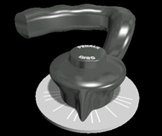

Nose Wheel Steering
Description
Nose wheel steering is electrically controlled by the BSCU and hydraulically operated by the green hydraulic system. Hydraulic pressure is applied to the steering system when all of the following conditions are satisfied:
- Nose landing gear doors are closed
- A/SKID & N/W STRG switch is selected ON
- Towing control lever is in the normal position
- At least one engine is running
- Main landing gear are compressed
The BSCU receives inputs from the Captain's and First Officer's nose wheel steering tillers (which are algebraically summed), rudder pedals, or autopilot. When using the tillers, the nose wheel steering angle is ± 75° until approximately 20 knots groundspeed. As speed increases, the angle decreases progressively to 0° at 70 knots.
|  |
A lever on the towing electrical box (located on the nose gear) deactivates the steering system for towing. When this occurs, the nose gear can be turned at ± 95°. When the lever is in the towing position, a NW STRG DISC ECAM message displays. The message is green, and becomes amber after the first engine start.